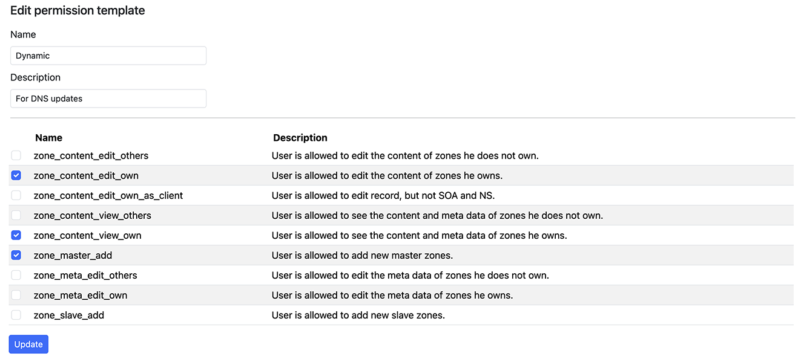
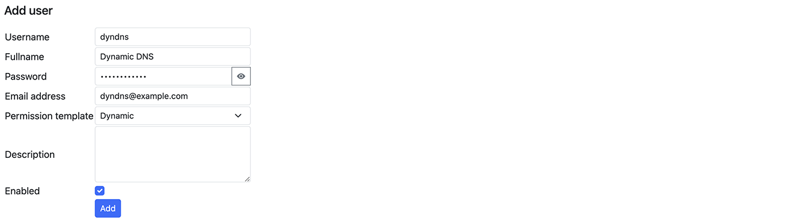
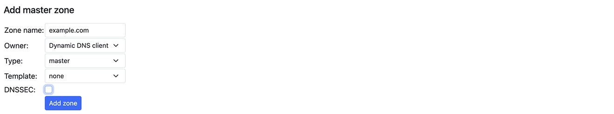
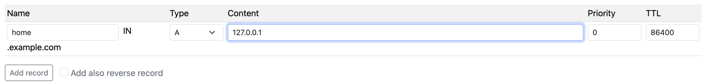

Note: This documentation is still in progress, not reviewed properly, and might contain some errors or outdated images. It's intended for the upcoming 4.0.0 release, so configuration settings might be different from previous versions.
Dynamic DNS Configuration
This guide will walk you through the process of setting up Dynamic DNS (DDNS) in Poweradmin.
Setting Up User Permissions
You'll need to create a user with specific permissions for DDNS updates:
- Create a permission template:
- Navigate to
Users > Add permission template - Provide a meaningful name (e.g., "dynamic") and description
- Select required permissions:
zone_master_addzone_content_view_ownzone_content_edit_ownorzone_content_edit_own_as_clientorzone_content_edit_others
- Navigate to

- Create a new user:
- Navigate to
Users > Add user - Fill in user details
- Apply the previously created template
- Navigate to

Configuring DNS Zone
After creating a user with appropriate permissions:
- Log in as the new user
- Select "Add master zone"
- Enter your domain name
- Navigate to the created zone
- Add a record for dynamic updates
 
Server-Side Configuration
The Dynamic DNS functionality in Poweradmin is provided by the dynamic_update.php script, which handles DNS record updates when IP addresses change.
Configuration Options
The main configuration is controlled through Poweradmin's settings:
return [
'dynamicdns' => [
'enabled' => true, // Enable or disable DDNS functionality
'ttl' => 60, // Default TTL for dynamic records (in seconds)
'allow_auto_detect' => true, // Allow automatic IP detection
'allow_ipv4' => true, // Allow IPv4 updates
'allow_ipv6' => true, // Allow IPv6 updates
'require_authentication' => true, // Require user authentication
],
];
Security Considerations
- Use HTTPS: Always use HTTPS for DDNS updates to prevent credentials and updates from being intercepted.
- Create dedicated users: Create specific users for DDNS updates with minimal permissions.
- IP restrictions: Consider implementing IP restrictions for DDNS user accounts if your update sources have static IP addresses.
- Regular auditing: Periodically review DDNS activity in logs to detect unusual patterns.
Testing Your Configuration
After setup, you can test your configuration using:
curl -u username:password "https://yourserver.com/dynamic_update.php?hostname=host.yourdomain.com&myip=auto"
A successful response will look like:
good 192.168.1.100
Troubleshooting
If you encounter issues with your DDNS setup:
- Check permissions: Ensure the user has proper permissions for zone editing
- Verify zone ownership: The user must own or have access to the zone being updated
- Check authentication: Verify credentials are correctly configured
- Review logs: Check Poweradmin logs for detailed error messages
- Test manually: Try manual updates with cURL to isolate client vs. server issues
For client setup instructions, see Client Setup.